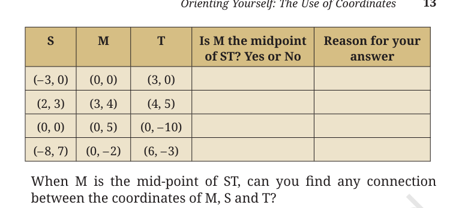

End-of-Chapter Exercises
00:00
Overview
This page provides comprehensive solutions for Class 9 Maths Chapter 1 "The Use of Coordinates" End-of-Chapter Exercises, including coordinate properties, midpoints, distance logic, and screen graphics applications.
Comprehensive Chapter Review & Advanced Problems
Q1: Origin Coordinates
What are the $x$-coordinate and $y$-coordinate of the point of intersection of the two axes?
The two perpendicular reference lines are the horizontal $x$-axis and the vertical $y$-axis.
The point where these two axes intersect is called the origin, denoted by $O$.
$x$-coordinate = $0$ and $y$-coordinate = $0$. The coordinates of the point of intersection are $(0, 0)$.
Q2: Vertical Line Points
Point $W$ has $x$-coordinate equal to $-5$. Can you predict the coordinates of point $H$ which is on the line through $W$ parallel to the $y$-axis? Which quadrants can $H$ lie in?
Any line parallel to the $y$-axis is vertical and has the equation $x = c$, where $c$ is a constant. Since the line passes through $W$ (which has $x$-coordinate $-5$), the equation of this line is $x = -5$.
Since point $H$ lies on this line, its $x$-coordinate must also be $-5$. Its $y$-coordinate can be any real number $y$. Therefore, the coordinates of $H$ are **$(-5, y)$**.
The quadrants $H$ can lie in depend on the value of $y$:
- If $y > 0$, then $H(-5, y)$ has a negative $x$-coordinate and positive $y$-coordinate, which lies in Quadrant II.
- If $y < 0$, then $H(-5, y)$ has a negative $x$-coordinate and negative $y$-coordinate, which lies in Quadrant III.
- If $y = 0$, the point lies on the negative $x$-axis (between Quadrants II and III).
Coordinates of $H = (-5, y)$. It can lie in Quadrant II (if $y > 0$) or Quadrant III (if $y < 0$).
Q3: Shape RAMP
Consider the points $R(3, 0)$, $A(0, -2)$, $M(-5, -2)$ and $P(-5, 2)$. If they are joined in the same order, predict:
- Two sides of $RAMP$ that are perpendicular to each other.
- One side of $RAMP$ that is parallel to one of the axes.
- Two points that are mirror images of each other in one axis. Which axis will this be?
The points are joined in the order: $R(3, 0) \rightarrow A(0, -2) \rightarrow M(-5, -2) \rightarrow P(-5, 2) \rightarrow R(3, 0)$.
(i) Perpendicular Sides:
- Side $AM$ lies on the horizontal line $y = -2$ (since both $A$ and $M$ have $y = -2$).
- Side $MP$ lies on the vertical line $x = -5$ (since both $M$ and $P$ have $x = -5$).
- Since horizontal and vertical lines are perpendicular, the sides **$AM$ and $MP$ are perpendicular** to each other ($AM \perp MP$).
(ii) Parallel Side:
- Side **$AM$** is parallel to the $x$-axis (horizontal line $y = -2$).
- Side **$MP$** is parallel to the $y$-axis (vertical line $x = -5$).
(iii) Mirror Images:
- Points **$M(-5, -2)$ and $P(-5, 2)$** have the same $x$-coordinate, and their $y$-coordinates are equal in magnitude but opposite in sign.
- Therefore, they are mirror images of each other across the **$x$-axis**.
(i) $AM \perp MP$; (ii) $AM \parallel x$-axis (or $MP \parallel y$-axis); (iii) $M(-5, -2)$ and $P(-5, 2)$ are mirror images in the $x$-axis.
Q4: Right Triangle Construction
Plot point $Z(5, -6)$ on the Cartesian plane. Construct a right-angled triangle $IZN$ and find the lengths of the three sides.
(Comment: Answers may differ from person to person.)
(Comment: Answers may differ from person to person.)
Let's choose point $Z(5, -6)$ in Quadrant IV. We need to construct a right-angled triangle $IZN$.
Let's choose $I(5, 0)$ on the $x$-axis (directly above $Z$) and $N(0, 0)$ as the origin.
Calculate the lengths of the three sides:
- Side $IZ$ is vertical: Length $= |0 - (-6)| = 6\text{ units}$.
- Side $IN$ is horizontal along the $x$-axis: Length $= |5 - 0| = 5\text{ units}$.
- Since $IZ$ is vertical and $IN$ is horizontal, $\angle I = 90^\circ$.
- Hypotenuse $ZN$ is calculated using the Pythagorean theorem: $$ZN = \sqrt{IN^2 + IZ^2} = \sqrt{5^2 + 6^2} = \sqrt{25 + 36} = \sqrt{61} \approx 7.81\text{ units}$$
For vertices $I(5,0)$, $Z(5,-6)$, and $N(0,0)$: $IZ = 6\text{ units}$, $IN = 5\text{ units}$, $ZN = \sqrt{61} \approx 7.81\text{ units}$.
Q5: Positive-Only Coordinates
What would a system of coordinates be like if we did not have negative numbers? Would this system allow us to locate all the points on a 2-D plane?
If negative numbers were not allowed, both $x$-coordinates and $y$-coordinates would have to be greater than or equal to $0$ ($x \ge 0, y \ge 0$).
This would restrict the entire coordinate system to the First Quadrant, including the non-negative halves of the axes and the origin.
No, this system would not allow us to locate all the points on a 2-D plane, because any points lying in Quadrants II, III, or IV require negative coordinates.
Q6: Collinear Points Method
Are the points $M(-3, -4)$, $A(0, 0)$ and $G(6, 8)$ on the same straight line? Suggest a method to check this without plotting and joining the points.
Method: Slope Check. Three points $P_1(x_1, y_1)$, $P_2(x_2, y_2)$ and $P_3(x_3, y_3)$ lie on the same straight line (are collinear) if the slope of the line joining $P_1$ and $P_2$ is equal to the slope of the line joining $P_2$ and $P_3$.
$$\text{Slope} = \frac{y_2 - y_1}{x_2 - x_1}$$
Let's compute the slopes:
- Slope of segment $MA$: $$m_1 = \frac{0 - (-4)}{0 - (-3)} = \frac{4}{3}$$
- Slope of segment $AG$: $$m_2 = \frac{8 - 0}{6 - 0} = \frac{8}{6} = \frac{4}{3}$$
Since the slope of $MA$ equals the slope of $AG$ ($m_1 = m_2 = \frac{4}{3}$), the points lie on the same straight line.
Yes, $M$, $A$, and $G$ are on the same straight line because the slope of $MA$ equals the slope of $AG$.
Q7: Collinearity Verification
Use your method (from Problem 6) to check if the points $R(-5, -1)$, $B(-2, -5)$ and $C(4, -12)$ are on the same straight line. Now plot both sets of points and check your answers.
Let's check using the slope method:
- Slope of segment $RB$: $$m_1 = \frac{-5 - (-1)}{-2 - (-5)} = \frac{-4}{3} \approx -1.33$$
- Slope of segment $BC$: $$m_2 = \frac{-12 - (-5)}{4 - (-2)} = \frac{-7}{6} \approx -1.17$$
Since the slope of $RB$ is not equal to the slope of $BC$ ($m_1 \neq m_2$), the points do not lie on a single straight line.
No, the points $R$, $B$, and $C$ are not on the same straight line.
Q8: Triangle Plotting
Using the origin as one vertex, plot the vertices of:
- A right-angled isosceles triangle.
- An isosceles triangle with one vertex in Quadrant III and the other in Quadrant IV.
(i) Right-angled Isosceles Triangle:
- Origin is $O(0, 0)$.
- Let's place one vertex on the $x$-axis: $A(4, 0)$.
- Place the other vertex on the $y$-axis with the same distance: $B(0, 4)$.
- Since $OA \perp OB$, the angle is $90^\circ$. Also, $OA = OB = 4$ units. The vertices are **$(0, 0)$, $(4, 0)$, and $(0, 4)$**.
(ii) Isosceles Triangle with vertices in Q-III and Q-IV:
- Origin is $O(0, 0)$.
- Place vertex $C$ in Quadrant III: $C(-3, -4)$. Distance $OC = \sqrt{(-3)^2 + (-4)^2} = 5$ units.
- Place vertex $D$ in Quadrant IV: $D(3, -4)$. Distance $OD = \sqrt{3^2 + (-4)^2} = 5$ units.
- Since $OC = OD = 5$ units, $\triangle OCD$ is isosceles with origin $O$ as the apex. Vertices: **$(0, 0)$, $(-3, -4)$, and $(3, -4)$**.
(i) Vertices: $(0, 0)$, $(4, 0)$, $(0, 4)$
(ii) Vertices: $(0, 0)$, $(-3, -4)$ in Q-III, $(3, -4)$ in Q-IV.
(ii) Vertices: $(0, 0)$, $(-3, -4)$ in Q-III, $(3, -4)$ in Q-IV.
Q9: Midpoint Table Analysis
The following table shows the coordinates of points $S$, $M$ and $T$. In each case, state whether $M$ is the midpoint of segment $ST$. Justify your answer.

When $M$ is the mid-point of $ST$, can you find any connection between the coordinates of $M$, $S$ and $T$?
Let's use the midpoint formula: Midpoint of segment $ST$ where $S(x_1, y_1)$ and $T(x_2, y_2)$ is given by:
$$\text{Midpoint} = \left( \frac{x_1 + x_2}{2}, \frac{y_1 + y_2}{2} \right)$$
Let's verify each row:
- Row 1: $S(-3, 0)$, $M(0, 0)$, $T(3, 0)$
Midpoint $= \left(\frac{-3 + 3}{2}, \frac{0 + 0}{2}\right) = (0, 0) = M$.
Yes, $M$ is the midpoint. - Row 2: $S(2, 3)$, $M(3, 4)$, $T(4, 5)$
Midpoint $= \left(\frac{2 + 4}{2}, \frac{3 + 5}{2}\right) = (3, 4) = M$.
Yes, $M$ is the midpoint. - Row 3: $S(0, 0)$, $M(0, 5)$, $T(0, -10)$
Midpoint $= \left(\frac{0 + 0}{2}, \frac{0 + (-10)}{2}\right) = (0, -5) \neq M(0, 5)$.
No, $M$ is not the midpoint (it should be $(0, -5)$). - Row 4: $S(-8, 7)$, $M(0, -2)$, $T(6, -3)$
Midpoint $= \left(\frac{-8 + 6}{2}, \frac{7 + (-3)}{2}\right) = (-1, 2) \neq M(0, -2)$.
No, $M$ is not the midpoint (it should be $(-1, 2)$).
Connection: When $M(x_m, y_m)$ is the midpoint of segment $ST$ between $S(x_s, y_s)$ and $T(x_t, y_t)$, then:
$$x_m = \frac{x_s + x_t}{2} \quad \text{and} \quad y_m = \frac{y_s + y_t}{2}$$
Row 1: Yes; Row 2: Yes; Row 3: No; Row 4: No. Connection is the Midpoint Formula: $M = \left(\frac{x_s + x_t}{2}, \frac{y_s + y_t}{2}\right)$.
Q10: Midpoint Back-Calculation
Use the connection you found to find the coordinates of $B$ given that $M(-7, 1)$ is the midpoint of $A(3, -4)$ and $B(x, y)$.
Let $M(x_m, y_m) = (-7, 1)$, $A(x_a, y_a) = (3, -4)$, and $B(x_b, y_b) = (x, y)$.
Use the midpoint formula for the $x$-coordinate:
$$-7 = \frac{3 + x}{2} \Rightarrow -14 = 3 + x \Rightarrow x = -17$$
Use the midpoint formula for the $y$-coordinate:
$$1 = \frac{-4 + y}{2} \Rightarrow 2 = -4 + y \Rightarrow y = 6$$
The coordinates of $B$ are $(-17, 6)$.
Q11: Segment Trisection
Let $P, Q$ be points of trisection of $AB$, with $P$ closer to $A$, and $Q$ closer to $B$. Using your knowledge of how to find the coordinates of the midpoint of a segment, how would you find the coordinates of $P$ and $Q$? Do this for the case when the points are $A(4, 7)$ and $B(16, -2)$.
Since $P$ and $Q$ are points of trisection of $AB$, they divide the segment into three equal parts: $AP = PQ = QB$.
- $P$ is the midpoint of $AQ$.
- $Q$ is the midpoint of $PB$.
- Let $M$ be the midpoint of $AB$. Since $P$ and $Q$ are symmetric about the center, $M$ is also the midpoint of $PQ$.
To find the coordinates of $P$ and $Q$:
Let $P = (x_p, y_p)$ and $Q = (x_q, y_q)$.
The total change in $x$ from $A$ to $B$ is $16 - 4 = 12$. Since there are 3 equal steps, the change in $x$ per step is $\frac{12}{3} = 4$.
The total change in $y$ from $A$ to $B$ is $-2 - 7 = -9$. The change in $y$ per step is $\frac{-9}{3} = -3$.
Let $P = (x_p, y_p)$ and $Q = (x_q, y_q)$.
The total change in $x$ from $A$ to $B$ is $16 - 4 = 12$. Since there are 3 equal steps, the change in $x$ per step is $\frac{12}{3} = 4$.
The total change in $y$ from $A$ to $B$ is $-2 - 7 = -9$. The change in $y$ per step is $\frac{-9}{3} = -3$.
Apply these steps:
- $x_p = x_a + 4 = 4 + 4 = 8$
- $y_p = y_a - 3 = 7 - 3 = 4$
- $x_q = x_p + 4 = 8 + 4 = 12$
- $y_q = y_p - 3 = 4 - 3 = 1$
Let's verify using midpoints:
- Is $P(8,4)$ the midpoint of $AQ$ where $A(4,7)$ and $Q(12,1)$? $$\text{Midpoint} = \left(\frac{4+12}{2}, \frac{7+1}{2}\right) = (8, 4) = P \quad \text{(Correct)}$$
- Is $Q(12,1)$ the midpoint of $PB$ where $P(8,4)$ and $B(16,-2)$? $$\text{Midpoint} = \left(\frac{8+16}{2}, \frac{4-2}{2}\right) = (12, 1) = Q \quad \text{(Correct)}$$
The coordinates of the trisection points are $P(8, 4)$ and $Q(12, 1)$.
Q12: Circle Boundary
- Given the points $A(1, -8)$, $B(-4, 7)$ and $C(-7, -4)$, show that they lie on a circle $K$ whose center is the origin $O(0, 0)$. What is the radius of circle $K$?
- Given the points $D(-5, 6)$ and $E(0, 9)$, check whether $D$ and $E$ lie within the circle, on the circle, or outside the circle $K$.
(i) Circle Proof: Let's calculate the distance of $A$, $B$, and $C$ from the origin $O(0,0)$ using the distance formula:
- $OA = \sqrt{(1 - 0)^2 + (-8 - 0)^2} = \sqrt{1 + 64} = \sqrt{65}$
- $OB = \sqrt{(-4 - 0)^2 + (7 - 0)^2} = \sqrt{16 + 49} = \sqrt{65}$
- $OC = \sqrt{(-7 - 0)^2 + (-4 - 0)^2} = \sqrt{49 + 16} = \sqrt{65}$
(ii) Inside/Outside Check: Calculate the distance of $D$ and $E$ from the origin $O(0, 0)$:
- For $D(-5, 6)$: $$OD = \sqrt{(-5 - 0)^2 + (6 - 0)^2} = \sqrt{25 + 36} = \sqrt{61} \approx 7.81$$ Since $OD < R$ ($\sqrt{61} < \sqrt{65}$), point $D$ lies within the circle.
- For $E(0, 9)$: $$OE = \sqrt{(0 - 0)^2 + (9 - 0)^2} = 9 = \sqrt{81}$$ Since $OE > R$ ($\sqrt{81} > \sqrt{65}$), point $E$ lies outside the circle.
(i) Radius of circle $K = \sqrt{65}$ units.
(ii) $D$ lies within the circle; $E$ lies outside the circle.
(ii) $D$ lies within the circle; $E$ lies outside the circle.
Q13: Triangle from Midpoints
The midpoints of the sides of triangle $ABC$ are the points $D$, $E$, and $F$. Given that the coordinates of $D$, $E$, and $F$ are $(5, 1)$, $(6, 5)$, and $(0, 3)$, respectively, find the coordinates of $A$, $B$ and $C$.
Let the vertices of $\triangle ABC$ be $A(x_1, y_1)$, $B(x_2, y_2)$, and $C(x_3, y_3)$.
Let $D(5,1)$ be the midpoint of $AB$, $E(6,5)$ be the midpoint of $BC$, and $F(0,3)$ be the midpoint of $CA$.
Let $D(5,1)$ be the midpoint of $AB$, $E(6,5)$ be the midpoint of $BC$, and $F(0,3)$ be the midpoint of $CA$.
Set up equations for the $x$-coordinates:
- $\frac{x_1 + x_2}{2} = 5 \Rightarrow x_1 + x_2 = 10 \quad \text{--- (Eq. 1)}$
- $\frac{x_2 + x_3}{2} = 6 \Rightarrow x_2 + x_3 = 12 \quad \text{--- (Eq. 2)}$
- $\frac{x_3 + x_1}{2} = 0 \Rightarrow x_3 + x_1 = 0 \quad \text{--- (Eq. 3)}$
- $x_3 = 11 - (x_1 + x_2) = 11 - 10 = 1$
- $x_1 = 11 - (x_2 + x_3) = 11 - 12 = -1$
- $x_2 = 11 - (x_3 + x_1) = 11 - 0 = 11$
Set up equations for the $y$-coordinates:
- $\frac{y_1 + y_2}{2} = 1 \Rightarrow y_1 + y_2 = 2 \quad \text{--- (Eq. 4)}$
- $\frac{y_2 + y_3}{2} = 5 \Rightarrow y_2 + y_3 = 10 \quad \text{--- (Eq. 5)}$
- $\frac{y_3 + y_1}{2} = 3 \Rightarrow y_3 + y_1 = 6 \quad \text{--- (Eq. 6)}$
- $y_3 = 9 - (y_1 + y_2) = 9 - 2 = 7$
- $y_1 = 9 - (y_2 + y_3) = 9 - 10 = -1$
- $y_2 = 9 - (y_3 + y_1) = 9 - 6 = 3$
The coordinates of the vertices are $A(-1, -1)$, $B(11, 3)$, and $C(1, 7)$.
Q14: Grid City Layout
A city has two main roads which cross each other at the centre of the city. These two roads are along the North–South (N–S) direction and East–West (E–W) direction. All the other streets of the city run parallel to these roads and are 200 m apart. There are 10 streets in each direction.
- Using $1\text{ cm} = 200\text{ m}$, draw a model of the city. Represent the roads/streets by single lines.
- Each street intersection is referred to in the following manner: If the second street running in the N–S direction and 5th street in the E–W direction meet at some crossing, then we call this street intersection $(2, 5)$. Using this convention, find:
- how many street intersections can be referred to as $(4, 3)$.
- how many street intersections can be referred to as $(3, 4)$.
(i) Model layout: Represent the city layout as a square grid of size $10 \times 10$ lines representing streets intersecting perpendicular to each other.
(ii) Intersections count:
- (a) $(4, 3)$: There is only **one** unique intersection point corresponding to the intersection of the 4th N-S street and the 3rd E-W street.
- (b) $(3, 4)$: There is only **one** unique intersection point corresponding to the intersection of the 3rd N-S street and the 4th E-W street.
(a) Only 1 intersection.
(b) Only 1 intersection.
(b) Only 1 intersection.
Q15: Graphics Calculations
A computer graphics program displays images on a rectangular screen whose coordinate system has the origin at the bottom-left corner. The screen is $800\text{ pixels}$ wide and $600\text{ pixels}$ high. A circular icon of radius $80\text{ pixels}$ is drawn with its centre at the point $A(100, 150)$. Another circular icon of radius $100\text{ pixels}$ is drawn with its centre at the point $B(250, 230)$. Determine:
- whether any part of either circle lies outside the screen.
- whether the two circles intersect each other.
(i) Boundaries: The screen space is defined by coordinates $x \in [0, 800]$ and $y \in [0, 600]$.
- Circle 1: Center $A(100, 150)$, radius $r_1 = 80$.
Horizontal range: $[100 - 80, 100 + 80] = [20, 180]$ (within $[0, 800]$).
Vertical range: $[150 - 80, 150 + 80] = [70, 230]$ (within $[0, 600]$). - Circle 2: Center $B(250, 230)$, radius $r_2 = 100$.
Horizontal range: $[250 - 100, 250 + 100] = [150, 350]$ (within $[0, 800]$).
Vertical range: $[230 - 100, 230 + 100] = [130, 330]$ (within $[0, 600]$).
(ii) Intersection: Find the distance $d$ between the centers $A(100, 150)$ and $B(250, 230)$ using the distance formula:
$$d = \sqrt{(250 - 100)^2 + (230 - 150)^2} = \sqrt{150^2 + 80^2} = \sqrt{22500 + 6400} = \sqrt{28900} = 170\text{ pixels}$$
Compare the distance $d$ to the sum of the radii ($r_1 + r_2 = 80 + 100 = 180\text{ pixels}$):
- Since $d = 170 < 180$, the centers are closer than the sum of their radii.
- Since $d = 170 > |r_2 - r_1| = 20$, one circle is not completely nested inside the other without touching.
- Therefore, the two circles intersect.
(i) No, neither circle lies outside the screen.
(ii) Yes, the two circles intersect each other.
(ii) Yes, the two circles intersect each other.
Q16: Coordinate Square
Plot the points $A(2, 1)$, $B(-1, 2)$, $C(-2, -1)$, and $D(1, -2)$ in the coordinate plane. Is $ABCD$ a square? Can you explain why? What is the area of this square?
Compute the length of all four sides using the distance formula:
- $AB = \sqrt{(-1 - 2)^2 + (2 - 1)^2} = \sqrt{(-3)^2 + 1^2} = \sqrt{10}$
- $BC = \sqrt{(-2 - (-1))^2 + (-1 - 2)^2} = \sqrt{(-1)^2 + (-3)^2} = \sqrt{10}$
- $CD = \sqrt{(1 - (-2))^2 + (-2 - (-1))^2} = \sqrt{3^2 + (-1)^2} = \sqrt{10}$
- $DA = \sqrt{(2 - 1)^2 + (1 - (-2))^2} = \sqrt{1^2 + 3^2} = \sqrt{10}$
Compute the length of the diagonals to check if they are equal:
- Diagonal $AC = \sqrt{(-2 - 2)^2 + (-1 - 1)^2} = \sqrt{(-4)^2 + (-2)^2} = \sqrt{20}$
- Diagonal $BD = \sqrt{(1 - (-1))^2 + (-2 - 2)^2} = \sqrt{2^2 + (-4)^2} = \sqrt{20}$
Calculate the area:
$$\text{Area} = \text{side}^2 = (\sqrt{10})^2 = 10\text{ sq units}$$
Yes, $ABCD$ is a square because all sides are equal ($\sqrt{10}$ units) and diagonals are equal ($\sqrt{20}$ units). The area is $10\text{ sq units}$.